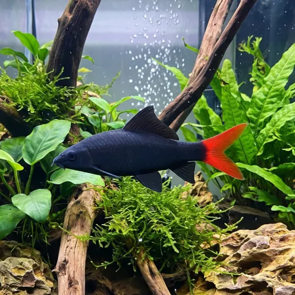

Nome principal
Labeo Bicolor
Labeo Bicolor, Tubarão Bicolor, Tubarão de Cauda Vermelha, Redtail Shark
Ficha de peixe
Labeos e Comedores de Algas
Um habitante territorial e deslumbrante de contraste preto e vermelho que exige espaço e abrigos para se destacar.

Nome principal
Labeo Bicolor, Tubarão Bicolor, Tubarão de Cauda Vermelha, Redtail Shark
Nome científico
Nome técnico essencial para taxonomia, cruzamento de manejo e referência editorial consistente.
Dificuldade de manejo
Use este nível como referência inicial, sempre considerando volume, estabilidade e compatibilidade do aquário.
Seções 4 a 6
Labeo Bicolor tem hábito alimentar onívoro. Excelente. 1 a 2 vezes ao dia. Consome raspagens de biofilme, mas necessita de rações afundantes à base de spirulina e alimentos proteicos variados.

Alimento completo em pastilhas adesivas para vidro enriquecido com vitaminas, ômega 3-6 e aloe vera para peixes tropicais.

Alimento completo em grânulos de afundamento lento com fórmula ProCare e carotenoides naturais, ideal para realçar as cores naturais e fortalecer a imunidade de peixes tropicais de meia-água e fundo.

Alimento completo em sticks de afundamento para camarões ornamentais de água doce, com minerais e algas.

Alimento completo diário em micro-bastões de afundamento com Spirulina para saúde, muda e coloração de camarões ornamentais.

Ração super premium em crisps para Acarás-Disco claros, livre de transgênicos. Com 50% de proteínas marinhas e alho, promove o crescimento e preserva as cores naturais.

Ração premium em grânulos de afundamento lento para peixes tropicais, Acarás-Disco e Bandeiras. Fórmula nutritiva que fortalece a imunidade e realça as cores vibrantes.

Ração super premium de afundamento rápido para Kinguios, livre de transgênicos. Previne problemas na bexiga natatória, melhora a digestão e realça as cores.

Ração super premium em crisps para Acarás-Disco, livre de transgênicos. Com 50% de proteínas marinhas nobres, promove crescimento, imunidade e cores naturais vibrantes.

Ração extrusada de alta palatabilidade desenvolvida especialmente para Acarás-Disco. Garante nutrição completa e promove o realce vibrante das cores naturais dos seus peixes.

Alimento completo super premium em crisps de afundamento lento feito com proteína sustentável de larva de mosca soldado negra.

Ração super premium em crisps de 1,5 mm para peixes ornamentais, livre de transgênicos. Com 42% de proteína, alho, prebióticos e vitamina C, estimula o apetite e fortalece a imunidade.

Ração super premium em crisps de 1,5 mm para peixes, livre de transgênicos. Com 42% de proteína, probióticos e prebióticos, fortalece a imunidade e auxilia na recuperação de estresse.

Ração super premium em crisps de afundamento lento, livre de transgênicos. Com 42% de proteína bruta, proteínas marinhas e astaxantina, realça a coloração natural dos peixes.
Fêmeas adultas são ligeiramente maiores e com o ventre mais arredondado; machos exibem a cor preta mais intensa. Tipo de reprodução: Ovíparo. Dificuldade de reprodução: Avançado. A reprodução no aquarismo doméstico é extremamente rara, sendo realizada comercialmente em tanques com indução hormonal.
Alta. Substrato recomendado: Areia fina ou cascalho macio com muitas cavernas de pedras e troncos. Necessidade de esconderijos: Alta. Aprecia aquários com troncos, pedras com cavernas e vegetação densa para delimitar e proteger seu território.
Seção 2
Seção 1
Seção 7
Atinge até 15 cm e pode viver até 10 anos se mantido em água limpa com filtragem eficiente.
Seção 8
Não é recomendado em aquários comuns, pois eles são extremamente territoriais e perseguem intensamente outros peixes da mesma espécie.
Consome biofilme e algas quando jovem, mas não deve ter sua alimentação baseada apenas nisso na fase adulta.
Recomenda-se um aquário de no mínimo 200 litros para garantir espaço territorial e refúgio aos companheiros de tanque.